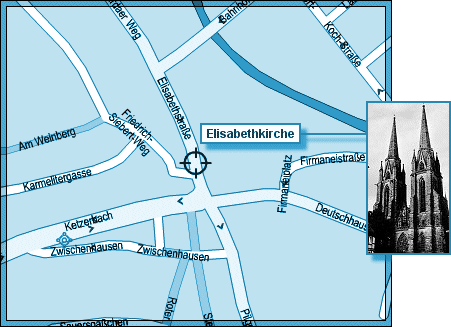
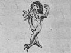

L'ICPA est une association privée créée par des amis et des collègues du journaliste Jack Lorski au lendemain de l'annonce de son meurtre en Écosse. Son seul but est d'aider les services de police et de justice internationaux à mettre fin le plus tôt possible aux agissements criminels du Phoenix.
SKL NETWORK est l'agence qui employait Jack Lorski. Elle a reçu et rendu public les deux CD-Roms envoyés par le Phoenix.
LIBERATION.FR a publié plusieurs articles sur l'affaire du Phoenix. Utilisez son moteur de recherches pour accéder à ses archives.
VICTIME N°7 : HILDE GARDENER
- IDENTITÉ
Hilde Anna Gardener est née à Dieburg (Allemagne), le 20 août 1980. Elle était étudiante en Histoire de l'Art à l'Université de Marbourg. Elle partageait un appartement en colocation avec Nina Krause, sa meilleure amie.
D'après Nina, Hilde avait peu d'amis mais elle entretenait depuis plusieurs mois une relation platonique avec un garçon qui faisait partie de l'Eglise Intransigeante en Allemagne.
Elle était membre laïc de Manus Domini.
- PHOTO
- DATE ET LIEU DU CRIME
En octobre 2002, le corps de Hilde Gardener est retrouvé dans la cave d'une maison située rue Steinweg, à Marburg, tout près de l'église Sainte Elisabeth et de l'Université. - AUTOPSIE
Hilde Gardener a été étranglée. Son corps portait des centaines de brûlures ; un symbole ésotérique a été gravé au fer rouge sur son front. Elle n'a pas été violée.
- ANALYSE
Hilde Gardener est la septième victime connue du Phoenix. Le tueur l'a choisie parce qu'elle était membre de Manus Domini, condition sine qua non de sa vengeance contre cette société secrète.
Afin de respecter son rituel lié au parcours européen de son maître à penser, Giordano Bruno, le Phoenix a également choisi Hilde Gardener parce qu'elle habitait à Marbourg. En effet, en 1586, le philosophe italien effectue un passage à l'Université de Marbourg, mais très vite son recteur, Petrus Nigidus, qui s'oppose à son enseignement, lui en interdit l'accès.
Toujours en référence à son maître, le Phoenix a signé son crime en associant Hilde Gardener à Tellus (la Terre), le douzième principe élémentaire de la magie brunienne (De imaginum idearum compositione, 1591) :Elle se présente tel un énorme monstre aux yeux dans tous les sens - c'est pourquoi elle est nue -, crachant des flammes d'une lumière bleu azuré tirant sur le bleu cobalt dans sa clarté, aux sourcils flamboyants comme de l'or qui encerclent ses yeux comme un tourbillon, des yeux brillant à merveille au centre de leur orbite. - COMMENTAIRES DU PHOENIX
• « Tellus fut la Septième.
A Marburg j'ai laissé son cadavre recouvert de brûlures
dans une cave abandonnée donnant sur la rue --------
Une rue désormais Sacrée… »
• « Avant d'être Elue, sacrifiée à Sol Invictus, Tellus s'appelait Hilde… »
• « Bravo Poussin, tu es presque aussi doué que la copine d'Hilde !
Cette petite travaille désormais comme caissière dans un supermarché,
Comme quoi l'histoire de l'art mène à tout… »
• « Nina Krause a la langue bien pendue…
J'aurais aimé lui arracher avec les dents mais il n'y avait qu'une Elue ; Hilde.
Elle seule a eu droit à cet honneur suprême.
Malgré ses manières de sainte nitouche
Elle n'a pas résisté longtemps à mes talents de séducteur… »
- DOCUMENT
• Extrait d'un article de liberation.fr relatant la découverte du corps de Hilde Gardener
« C'est le petit Frantz qui l'a trouvée. La superballe super rebondissante faisait sursauter les passants dans cette ruelle pavée du quartier de l'église Sainte-Elisabeth, à Marburg (Allemagne). Elle est passée par la mince ouverture d'un soupirail et tombée dans la cave d'un immeuble en restauration. Le petit Frantz a poussé la vitre en passant les pieds par les barreaux. C'est une atroce odeur de chair en décomposition qui est alors remontée. Le petit Frantz s'en souviendra toute sa vie. Il est comme ça, le lieutenant Gerd Hanke. Il vous raconte des horreurs sur un ton neutre. 42 ans, profiler pour la police criminelle fédérale, formé aux écoles du FBI américain et fameux pour avoir, entre autres, capturé il y a cinq ans le comptable du fisc de Düsseldorf qui se prenait pour la réincarnation de Torquemada (30 contribuables fraudeurs dépecés avoués, 84 soupçonnés), il vous tend les photos à bout de bras. Vous voulez voir ?, comme si c'étaient celles de ses vacances en famille. Non, merci, on vient d'absorber un petit-déjeuner typique aussi cossu que les maisons à colombages de ses terres luthériennes -et on tient à le garder. Alors, il reprend froidement : Hilde Gardener, étudiante. 22 ans. Etranglée. Non violée. Vraisemblablement torturée. Le corps portait des centaines de brûlures de toutes tailles. On enquête sur elle. Il range ses photos sans les regarder. Il en connaît les moindres détails. Dans la poussière de charbon, il y avait écrit, avec le sang de la victime, Sol Invictus. Hanke donne cet indice en passant, comme si c'était un détail, et pourtant il est d'importance : c'est le signe qu'on aurait affaire à un serial killer plus cérébral que sexuel… »
- LIENS
• Site personnel de Hilde Gardener
• Site personnel de Nina Krause
• Site du Kunstklub der Philipps-Universität (Marburg)